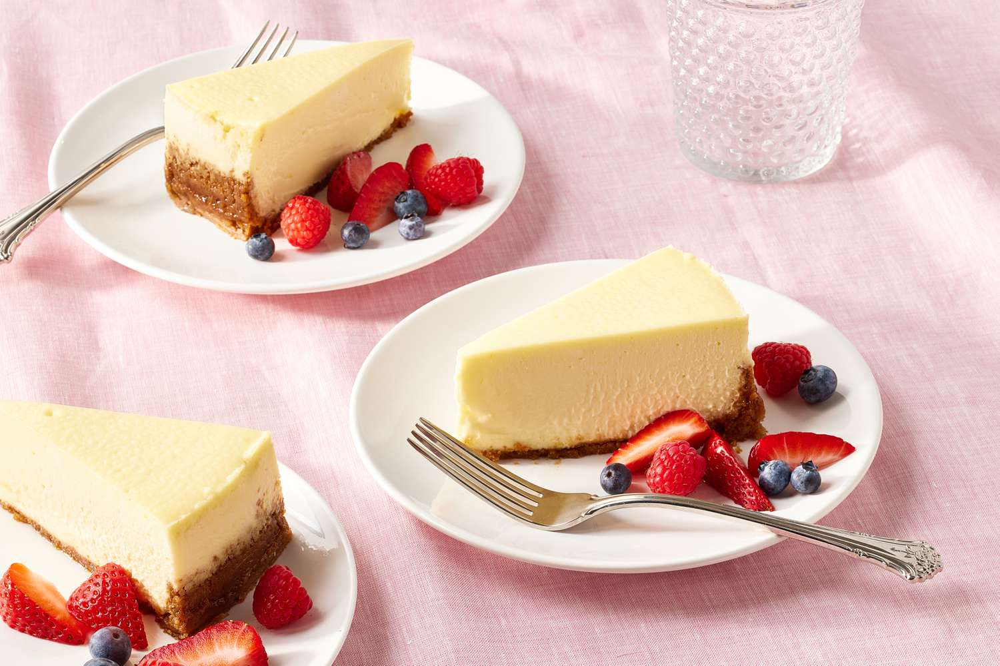

Cheesecake

Description
A rich and creamy classic cheesecake over a graham cracker crust.
Ingredients
Crust
- Graham Cracker Crumps 1.5 Cups
- White Sugar 2 Tablespoons
- Brown Sugar 1 Tablespoon
- Butter 7 Tablespoons
Cheesecake
- Cream Cheese 32 Ounces
- White Sugar 1 Cup
- Sour Cream 2/3 Cups
- Vanilla Extract 1.5 Teaspoons
- Salt 1/8 Teaspoon
- Eggs 4
Steps
- Preheat oven to 160 degrees Celsius
- Combine graham cracker crums, sugar, and brown sugar in a bowl. Stir well.
- Add butter to bowl and use a fork to mix.
- Pour into a pan and press firmly into the bottom and the sides of the pan.
- In a bowl, add cream cheese and stir until smooth.
- Add sugar and continue stirring until creamy.
- Add sour cream, vanilla extract, and salt. Stir until well-combined.
- Gradually add lightly beaten eggs, stirring until each egg is incorporated.
- Pour cheesecake batter into pan.
- Place pan on cookie sheet lined with foil.
- Place pan and sheet on center rack of oven.
- Bake on 160 degrees Cesius for 60 minutes.
- Remove from oven and allow to cool for 10 minutes.
- Use a knife to loosen crust from the pan.
- Cool for 2 hours at room temperature and transfer to refrigerator to cool for 6 more hours.